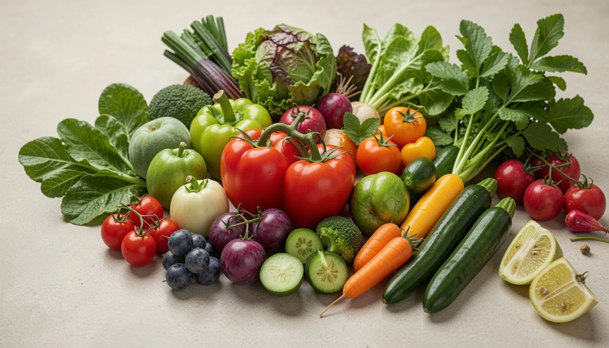

Bir tabak dolusu sebze, yalnızca lezzet değil; biyoaktif bileşikler, vitaminler, mineraller ve bazen beklenmedik riskler barındırır. Bilim, hangi sebzenin ne zaman gerçekten faydalı, hangi koşullarda potansiyel olarak zararlı olduğunu giderek daha net bir şekilde ortaya koymaktadır.
İnsan Sağlığına En Fazla Faydası Kanıtlanmış Sebzeler
Broçoli (Brassica oleracea var. italica): İtalyan kökenli bu Akdeniz sebzesi, günümüzde Çin, Hindistan ve ABD’de yoğun olarak yetiştirilmektedir. Broçoli; sülforafan adlı bir izotiyosiyanat bileşiği içerir. Sülforafan üzerine hücre ve hayvan çalışmalarında biyolojik etkiler incelenmiştir (Fahey ve diğerleri, 1997; PNAS); bu bulgular brokolinin kanseri önlediğini veya tedavi ettiğini göstermez. Besin içeriği çeşide ve hazırlamaya göre değişir; USDA FoodData Central çiğ brokoli için 100 gramda yaklaşık 89 mg C vitamini bildirir. Buharda pişirme, kaynatmaya kıyasla suda çözünen bazı besin öğelerinin kaybını azaltabilir; etkinin büyüklüğü besine ve pişirme koşullarına bağlıdır.
Ispanak (Spinacia oleracea): Orta Asya kökenli olup 10. yüzyılda Arap tüccarları aracılığıyla Akdeniz’e yayılmıştır. Çin, FAOSTAT'ın son yıllardaki üretim tablolarında başlıca ıspanak üreticilerindendir; ülke payları ürün tanımına ve raporlama yılına göre değişir. Ispanağın demir miktarı çeşide ve ölçüm yöntemine bağlıdır; ıspanaktaki demirle ilgili meşhur ondalık basamak hatası anlatısı için güvenilir tarihsel kanıt yoktur. Bununla birlikte; K vitamini, folat, lutein ve zeaksantin açısından son derece zengindir. Lutein ve zeaksantin göz sağlığında yaşa bağlı makula dejenerasyonu riskinde rol oynayabilir (SanGiovanni ve diğerleri, 2007; Archives of Ophthalmology). Uyarı: böbrek taşı riski taşıyan bireylerin yüksek okzalat içeriği nedeniyle ıspanağı aşırı tüketmemesi önerilir.
Sarımsak (Allium sativum): Orta Asya kökenli olup MÖ 3.000’e ait Mısır papirüslerinde tıbbi kullanımı belgelenmiştir. Bugün Çin, dünya üretiminin yaklaşık yüzde yetmişini sağlamaktadır. Sarımsak ezildiğinde oluşan allicin ve başka kükürtlü bileşikler laboratuvar çalışmalarında biyolojik etkinlik göstermiştir; bu, sarımsağın enfeksiyonları tedavi ettiği anlamına gelmez. Klinik araştırmalar bazı preparatların kan basıncı veya kan yağları üzerinde küçük etkileri olabileceğini düşündürür; sonuçlar tutarlı değildir ve sarımsak tedavinin yerini tutmaz. Isı ve hazırlama yöntemi bileşik miktarını değiştirebilir (Ried ve diğerleri, 2016; Journal of Nutrition).
Havuç (Daucus carota): Afganistan ve çevresindeki yabani çeşitlerle ilişkilendirilir; turuncu havucun seçilme tarihi tek bir ülke veya döneme indirgenemez. Havucun beta-karoten miktarı çeşide göre değişir ve vücut bunu A vitaminine dönüştürebilir. Yağla birlikte tüketmek karotenoidlerin emilimini artırabilir; bu etki genel beslenme düzeni içinde değerlendirilmelidir (Brown ve diğerleri, 2004; AJCN).
Domates (Solanum lycopersicum): Her ne kadar botanik sınıflandırmada meyve olsa da mutfak geleneğinde sebze olarak kabul edilmektedir. Meksika ve Orta Amerika kökenlidir; İspanyollar tarafından 16. yüzyılda Avrupa’ya taşınmıştır. Domatesin güçlü antioksidanı likopen, kanser riskini azalttığı kesinleşmiş değildir; likopen araştırmaları olası ilişkileri inceler ve tek başına koruyucu etki kanıtlamaz. Isıl işlem domates dokusunu yumuşatıp likopenin ölçülen biyoyararlanımını artırabilir; sonuç pişirme yöntemi ve öğün bileşimine bağlıdır (Giovannucci ve diğerleri, 2002; JNCI). Bugün İtalya, İspanya, ABD ve Çin önemli domates üreticileridir.
Enginar (Cynara scolymus): Ata türü Kuzey Afrika’da (Cynara cardunculus) yetişen bu sebze, Sicilya’da kültüre alındıktan sonra İspanya, Fransa ve İtalya’ya yayıldı. Sinamik asit ve luteolin gibi bileşikler içerir. Enginar yaprağı özütüyle ilgili klinik çalışmalar sınırlıdır; bu bulgular enginarın karaciğer hastalığını tedavi ettiğini göstermez. Safra yolu hastalığı veya safra taşı olan kişiler, enginar özütü gibi ürünleri kullanmadan önce sağlık uzmanına danışmalıdır (Kraft, 1997; Phytomedicine).
Dikkatli Tüketilmesi Gereken ya da Belirli Koşullarda Zararlı Sebzeler
Patlıcan (Solanum melongena): Hindistan ve Burma bölgesinde kültüre alınmıştır; bugün Çin, Hindistan ve Mısır önde gelen üreticilerdir. Patlıcan, Solanaceae (gece güzeligillerden) familyasına üye olduğundan çeşitli doğal bileşikler içerir; patlıcanın başlıca mor pigmenti nasunindir. Patlıcanda ölçülebilir solanin bulunduğu ve olağan tüketimin zehirlenmeye yol açtığı iddiası genellenemez. Romatoid artrit veya gut hastalarında patlıcanın özel olarak zararlı olduğunu gösteren güçlü kanıt yoktur. Taze ve uygun biçimde saklanmış patlıcan olağan mutfak yöntemleriyle tüketilebilir.
Lahana ve Broçoli Ailesinin Aşırı Tüketimi: Turpgiller ailesi (lahana, Brüksel lahanası, karnabahar, turp) goitrojenler gibi bileşikler barındırır; ancak olağan miktarda turpgil sebze tüketiminin yeterli iyot alan kişilerde tiroid işlevini bozduğuna dair kanıt yoktur. Çok yüksek miktarda çiğ turpgil tüketimi ve iyot yetersizliği ayrı değerlendirilmelidir. Tiroid hastalığı olanlar kişisel beslenme önerisi için sağlık uzmanına danışabilir (kanıtların sınırları ve bireysel durum).
Patates (Solanum tuberosum): Peru ve Bolivya And Dağları kökenlidir; 16. yüzyılda İspanyollar aracılığıyla Avrupa’ya ulaştı. Bugün Çin, Hindistan, Rusya ve Ukrayna dünyada en çok patates üreten ülkeler arasındadır. Yeşillenmiş ya da filizlenmiş patateste solanin miktarı artabilir; belirgin yeşillenmiş, acılaşmış veya yoğun filizlenmiş patatesler tüketilmemeli, yalnızca yeşil kısmı kesmek her durumda riski gidermeyebilir. Glisemik yanıt çeşide, pişirme ve soğutmaya, porsiyona ve öğün bileşimine göre değişir; tek bir GI değeri tüm patates yemeklerini tanımlamaz. Bütün ve haşlanmış patateste nişastanın bir kısmı direnç nişastasına dönüşerek bağırsak sağlığı açısından faydalı hale gelir.
Ravent (Rheum rhabarbarum): Orta Asya ve Sibirya kökenli bu sebzenin yaprakları yüksek oksalat içerdiğinden yenmemelidir. Sapları gıda olarak kullanılır. Böbrek taşı öyküsü olanlar için tek tip ravent porsiyon sınırı belirleyen güçlü kanıt bulunmadığından kişisel öneri sağlık uzmanından alınmalıdır. Esas yetişme alanları Kuzey Avrupa, Kanada ve kuzey ABD’dir.
Manyok (Manihot esculenta): Brezilya kökenli bu köklü sebze, bugün Sahra Altı Afrika, Güneydoğu Asya ve tropik Amerika’da milyonlarca insanın beslenmesinde önemli bir temel üründür. Kök kısmında bulunan siyanojenik glikozitler (linamarin ve lotaustralin) yanlış hazırlandığında siyanür salınımına yol açar. Geleneksel hazırlık yöntemleri (soyma, ıslatma, uzun süreli pişirme) bu bileşikleri etkisiz kılar. Ancak hazırlama sürecinin atlandığı durumlarda “konzo” adı verilen kalıcı felç hastalığı görülebilmektedir (Tylleskär ve diğerleri, 1992; Lancet).
Dünya Genelinde Sebze Üretimi: Nerede, Ne Yetişir?
FAO'nun FAOSTAT veri tabanı bitkisel ürün üretimini ülke, ürün ve yıla göre raporlar. Toplamlar, sebze ürünlerinin hangi gruplara dahil edildiğine ve seçilen raporlama yılına göre değiştiğinden aşağıdaki örnekler kesin küresel paylar olarak okunmamalıdır.
Çin: FAOSTAT'ın pek çok yaygın taze sebze ürününe ait üretim tablolarında önde gelen üreticilerdendir. Üretim miktarı ürün ve yıla göre ayrı ayrı kontrol edilmelidir.
Hindistan: Birçok sebze ürününün büyük üreticilerindendir. Sıralamalar ürün bazında ve yıla göre değişir; tek bir genel sebze sıralaması bütün ürünleri temsil etmez.
Akdeniz Ülkeleri (İtalya, İspanya, Türkiye, Yunanistan): Domates, biber, patlıcan ve çeşitli yapraklı sebzeler bölgede yetiştirilir. Üretici ülke sıralamaları ürün ve yıla göre değişir; karşılaştırma için FAOSTAT'ın aynı yıl ve aynı ürün tanımı kullanılmalıdır.
Orta ve Kuzey Avrupa: Patates, havuç, soğan, pırasa ve lahana türleri yaygın ürünler arasındadır. Seracılık, mevsim dışı sebze üretimini mümkün kılabilir; üretim takvimi ülkeye ve yetiştirme sistemine bağlıdır.
Sahra Altı Afrika: Manyok, yer fıstığı, fasulye ve tatlı patates birçok ülkede önemli gıda ürünleridir. Nijerya FAOSTAT verilerinde manyok üretiminin başlıca üreticilerindendir.
Sebzelerin Besin Değerini Koruma: Pişirme ve Saklama Yöntemleri
Sebzelerin besin içeriği hazırlama, saklama süresi ve sıcaklığa göre değişebilir. Suda pişirme bazı suda çözünen vitaminlerin pişirme suyuna geçmesine yol açar; buharla pişirme bu kaybı azaltabilir. Uygun saklama koşulu ürüne göre farklıdır: olgunlaşmamış veya soğuğa duyarlı ürünler için ev tipi buzdolabı her zaman en iyi seçenek değildir. Gıda güvenliği açısından bozulabilir ürünleri güvenli sıcaklıklarda saklamak gerekir.
“Yiyeceğin ilacın, ilacın yiyeceğin olsun.” — Hipokrat, MÖ 460–370
Sonuç: Doğru Sebze, Doğru Koşul
Hiçbir sebze tek başına hem zararlı hem de faydalıdır; bağlam her şeydir. Pişirme yöntemi, tüketim miktarı, bireyin sağlık durumu ve saklama koşulları; bir sebzenin tablodaki rolünü kökten değiştirebilir. Bilimsel kanıtlar, çeşitli ve mümkün olduğunca az işlenmiş sebze tüketiminin genel sağlık üzerinde güçlü koruyucu etkiler gösterdiğine işaret etmektedir. Devam niteliğindeki içeriğimiz için Meyveler: Sağlıklı ve Zararlı Türler yazımızı ve konunun evrimsel arka planı için Sebze ve Meyvelerin Evrimi yazımızı inceleyebilirsiniz.
Kaynaklar: USDA FoodData Central, https://fdc.nal.usda.gov/ ; FAO, FAOSTAT Crops and Livestock Products, https://www.fao.org/faostat/en/#data/QCL ; NIH Office of Dietary Supplements, Vitamin C Fact Sheet for Health Professionals, https://ods.od.nih.gov/factsheets/VitaminC-HealthProfessional/ ; EFSA CONTAM Panel, Risk assessment of glycoalkaloids in feed and food, EFSA Journal 2020, DOI: 10.2903/j.efsa.2020.6222 ; Fahey J. W. et al. (1997), "Broccoli sprouts: an exceptionally rich source of inducers of enzymes that protect against chemical carcinogens", PNAS 94, 10367–10372, DOI: 10.1073/pnas.94.19.10367 ; WHO, Cassava and cyanide, https://www.who.int/news-room/fact-sheets/detail/cyanide .